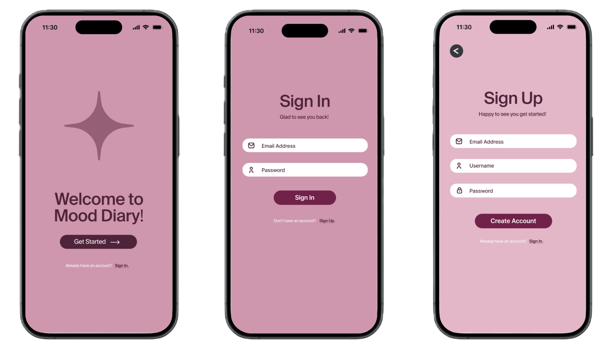
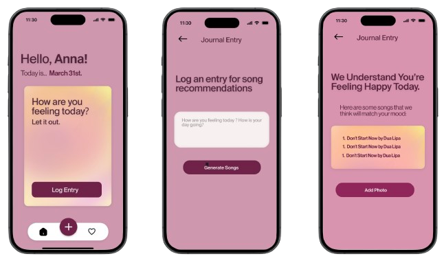
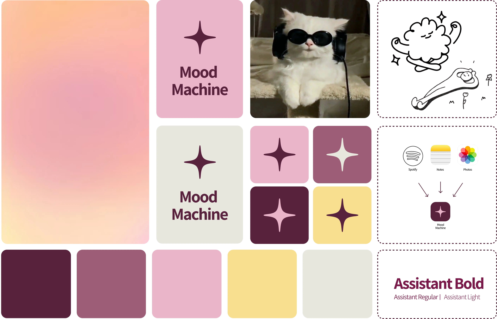

Mood Machine
Overview
Mood Machine is a mobile mood-tracking app that uses an OpenAI API to generate personalized song recommendations based on users’ journal entries. The goal was to create a more engaging way for people to reflect on their emotions, where journaling leads to something immediate and interactive.
Working in a team of two, we moved through ideation, design, and development iteratively using Figma and React Native, building a fully functional prototype where the recommendation system was live.

Background
Emotional tracking is often framed as a static activity, which can make it difficult to sustain over time. We were interested in how introducing music could make that process feel more dynamic and rewarding.
The challenge became designing something that felt lightweight and personal, while still supporting meaningful input and interaction. We wanted the app to feel accessible and intuitive, but also distinct enough to make journaling feel worth returning to.
Process
We began by defining the core interaction: how a journal entry could translate into a song recommendation. From there, I focused on shaping the user flow and overall structure of the app through wireframes and prototypes in Figma.
As the project moved into development, the process became much more iterative. Working in React Native, we were constantly navigating the gap between what we wanted the experience to be and what we could realistically implement.
One of the biggest challenges was managing the codebase collaboratively. Working across the same app introduced friction around version control and integration, which forced us to be more intentional about how we structured and updated our work.
Testing and small iterations played a key role. Rather than making large changes, we refined flows and interactions incrementally to make the app feel clearer and more intuitive.

Solution
The final app combines journaling and music into a single interaction. Users log their emotions and receive personalized song recommendations through a working OpenAI integration, creating a more immediate and engaging feedback loop.
The structure was designed to feel simple and approachable, while still supporting a more layered and personal experience.
Results
The result was a fully functional prototype with a working API integration, demonstrating how emotional reflection can be supported through interaction and personalization.
The project also highlighted the importance of aligning design and development early, especially in collaborative environments where technical constraints shape the experience.

Learnings
This project strengthened my ability to move between design and development, and showed me how much clarity comes from building what you design.
It also made me more aware of the challenges of collaboration in code. Version control, structure, and communication all directly impact the final product.
More than anything, it reinforced that small, iterative changes are often what make an experience feel intuitive.